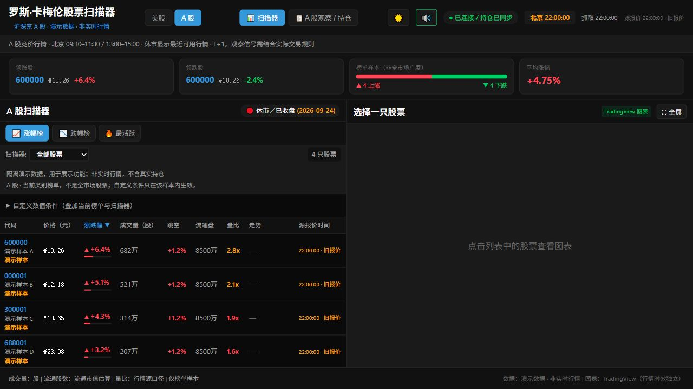
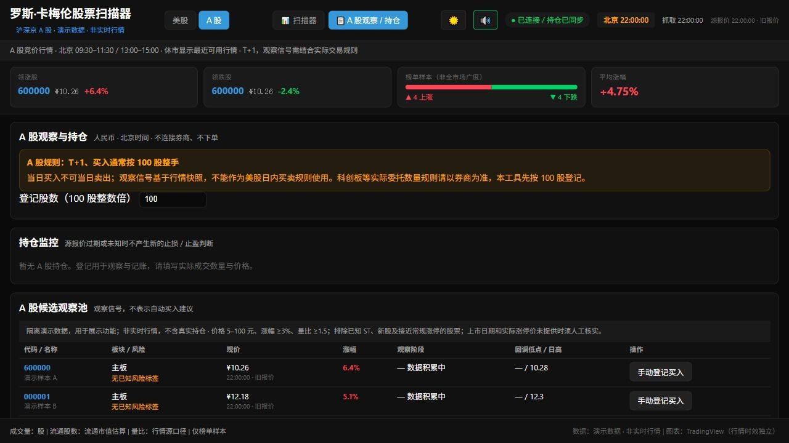

美股与沪深京 A 股
切换市场，同步调整币种、时区、涨跌颜色与观察条件。A 股单独展示板块和 T+1 状态。
LOCAL FIRST · 中文双市场工作台
从榜单筛选，到图表观察，再到模拟持仓复盘。把关注的价格、时间与风险，放在同一个清晰界面里。
本机运行 · 中文深浅主题 · 模拟记账，不提交真实订单
| 代码 / 名称 | 价格 | 涨幅 | 量比 |
|---|---|---|---|
| DEMOA示例科技 | $8.62 | +18.40% | 5.6× |
| DEMOB示例医疗 | $6.15 | +12.80% | 4.2× |
| DEMOC示例能源 | $4.28 | +9.60% | 3.1× |
从发现，到记录
把公开行情转化为可检查的关注名单，保留数据的来源、时效与局限。
切换市场，同步调整币种、时区、涨跌颜色与观察条件。A 股单独展示板块和 T+1 状态。
按价格、涨幅、量比与流通股数筛选当前榜单样本，配合接近日高和真实开盘跳空观察。
点击股票打开 TradingView 图表，保留选中股票并独立查询报价；不支持的股票提供备用链接。
区分源报价时间与抓取成功时间。缺失指标显示“—”，源失败保留旧数据并提示，避免误读。
手动记录入场、止损与目标，观察峰值和报价状态。按市场和交易日期归档，重启后恢复持仓。
构建完成后使用本机缓存；策略页按需加载。成功榜单先显示，额外指标与独立报价随后补齐。
界面预览
以下为隔离演示环境的实际界面截图，不含真实用户持仓。截图里的数值仅用于展示功能。


双市场，独立规则
US / 美股
CN / 沪深京 A 股
几步开始
安装 Node.js ≥22.12.0 与 npm，建议 Node 24。首次启动自动准备所需组件，完成后保留构建缓存。
下载源码 ZIP ↗Windows 可双击 create-desktop-shortcut.bat 创建桌面入口。无需管理员权限，不设置开机自启。
start.bat。git clone https://github.com/cs0074152/ross-cameron-stock-scanner.git
cd ross-cameron-stock-scanner
.\start.batgit clone https://github.com/cs0074152/ross-cameron-stock-scanner.git
cd ross-cameron-stock-scanner
bash start.sh默认页面 localhost:5173。端口占用时会自动选择空闲端口，以实际提示为准。停止服务用 Ctrl+C。
数据说明
美股使用 Yahoo Finance 与 StockAnalysis，A 股使用东方财富；图表由 TradingView 加载。公开接口可能延迟、限流或变化，连接成功不等于报价已经更新。
榜单是样本，不覆盖全市场。快照不是完整 K 线，也不包含 Level 2、逐笔成交或新闻验证。未知和过期指标不会被自动当作有效值。
持仓与收据保存到本机，不进入 Git 仓库。所有登记与平仓均为模拟，不连接券商；GitHub Pages 仅承载这份介绍，不运行行情后台。
使用风险与责任
本软件仅供学习、行情观察、策略研究和模拟复盘，不构成投资建议或收益承诺，不连接券商、不执行真实交易。实际投资或交易决定及其结果由使用者自行负责。
软件按“现状”和“可用状态”提供，不保证软件及第三方数据准确、完整、及时、可靠或持续可用；行情可能延迟、缺失或错误，模拟结果不代表真实成交或实际收益。
因使用、无法使用本软件，或依赖其中的数据、图表、信号或模拟结果产生的任何直接或间接损失，包括投资或交易亏损、资金损失、利润损失、错失机会、数据丢失、系统故障及业务中断，在适用法律允许的最大范围内，均由使用者自行承担，作者、贡献者及维护者不承担责任，也不承担赔偿或补偿义务。
请独立评估风险、核实行情并备份数据。本声明不排除或限制适用法律规定不得免除或限制的责任；如有冲突，以适用法律为准，不变更 MIT 许可的授权条件。
阅读完整免责声明 ↗常见问题
当前实现不需要填写商业行情 API Key；公开行情来源可能有时效、访问频率和使用条款限制。
查看连接状态、源错误和报价时间。休市、公开接口限流或网络不通可能导致等待；系统保留最后有效数据并说明状态。外部图表的加载速度也受网络影响。
持仓由本机后端保存到 backend/data/positions.json，换浏览器会重新对账。换电脑前先停止服务并备份该文件。浏览器还保存本机显示设置与盈亏镜像。
不会。登记与平仓是模拟记账；盈亏基于最近有效源报价，未扣手续费，不能代表真实成交、收益或交易建议。
当前版本是本机单用户工具，服务只允许回环地址。多人使用需要额外的身份认证、权限和数据隔离设计。本页只是项目介绍。
把观察过程记录下来